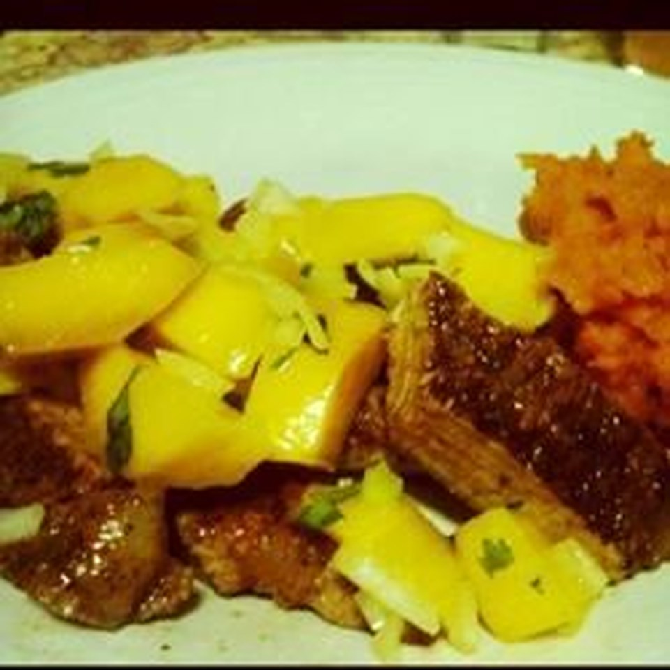

Pork Loin with Mango

Description
This is a simple recipe involving pork loin and mango that is also paleo friendly.
Additionally, it's not very resource intensive, so you won't need to buy many things in order to make it.
Ingredients
- 2 teaspoons chili powder
- 1/2 teaspoon unsweetened cocoa powder
- 1 boneless pork loin, trimmed
- 1 teaspoon olive oil
- 1/2 mango, peeled and diced
- 1/2 small shallot, peeled and thinly sliced
- 2 tablespoons chopped fresh cilantro
- 1 tablespoon lemon juice
Steps
- Preheat oven to 425 degrees F (220 degrees C).
- Combine chili powder and cocoa powder in a bowl; sprinkle over both sides of pork loin.
- Heat olive oil in a skillet over medium heat and brown pork loin on both sides, about 3 minutes per side.
Transfer pork and juices to a baking dish.
- Roast in the preheated oven until pork is slightly pink in the center, about 12 minutes.
An instant-read thermometer inserted into the center should read at least 145 degrees F (63 degrees C)
- Combine mango, shallot, cilantro, and lemon juice in a bowl.
Slice pork loin and top with juices from the baking dish and mango mixture.